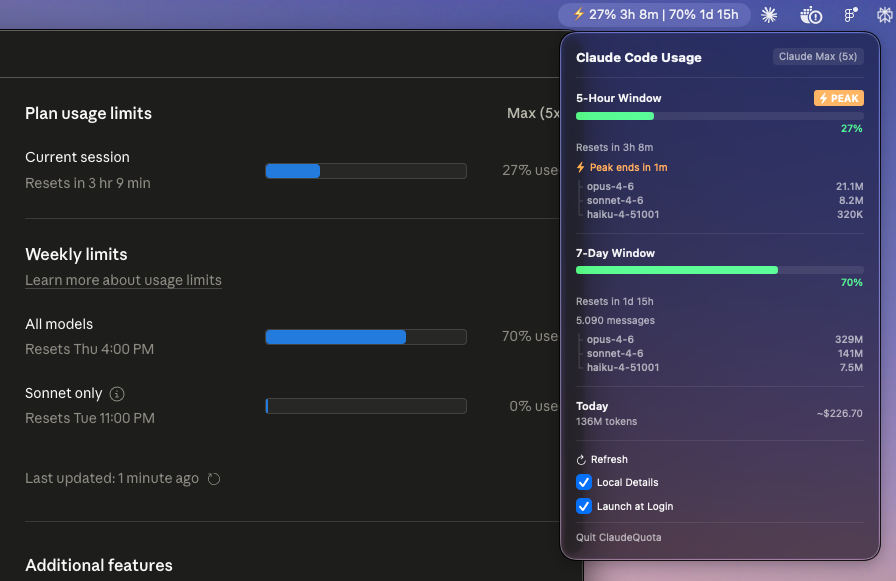

A lightweight macOS menu bar app that shows your Claude Code usage in real time — no setup, no API key, zero config.

Reads directly from Anthropic's internal quota API — the same numbers Claude Code itself shows you.
5-hour and 7-day reset timers tick down in real time right in your menu bar.
Green → orange → red as you approach your limits. Know your status at a glance.
Badge and countdown during weekday peak hours (5 am–11 am PT) when your 5-hour budget depletes faster. Affects Free, Pro, and Max plans. Learn more →
Per-model token counts from your local session files. Toggle off for pure API-only mode.
Estimated USD spend based on published Anthropic pricing, updated as you work.
Reads Claude Code's existing keychain credentials automatically. No login, no API key needed.
Automatically refreshes expired OAuth tokens and saves them back — Claude Code keeps working seamlessly.
| Data | Source |
|---|---|
| 5h / 7d utilization % | Anthropic quota API (/api/oauth/usage) |
| Reset timestamps | Anthropic quota API |
| Per-model token breakdown | Local JSONL files (~/.claude/projects/) |
| Today's tokens + cost | Local JSONL files |
| Plan / tier info | macOS Keychain (Claude Code-credentials) |
| Peak hours | Computed locally (weekdays 12:00–18:00 UTC); see FAQ |
The app uses Claude Code's existing OAuth token from the macOS Keychain — no separate login or API key needed. Quota is fetched every 60 seconds with a minimum of 30 seconds between calls. On a 429 response the app backs off for 5 minutes. The Local Details toggle disables JSONL scanning entirely when off.
Grab ClaudeQuota.zip from the latest release.
Unzip and drag ClaudeQuota.app to /Applications.
Double-click to launch. If macOS shows a warning, right-click → Open. Your quota appears in the menu bar instantly.
If you see "unidentified developer"
xattr -cr /Applications/ClaudeQuota.app
Build from source
Requires Xcode Command Line Tools (xcode-select --install).
git clone https://github.com/joinnow-io/claude-quota.git cd claude-quota swift build -c release bash scripts/make-app.sh # → dist/ClaudeQuota.app
Requires macOS 14 (Sonoma) or later and Claude Code installed and logged in.
Claude Code-credentials) — the same credentials the CLI already uses. It never creates new credentials or modifies your account.
No. ClaudeQuota reads the OAuth token Claude Code already stores in your macOS Keychain. If you're logged in to Claude Code, you're good to go.
No. ClaudeQuota has read-only access to your keychain and session files. It does not modify any Claude Code settings, config, or data. When it refreshes an expired OAuth token it writes the new token back to the keychain — the same thing Claude Code itself does.
Quota is fetched at startup, then every 60 seconds. A minimum of 30 seconds is enforced between any two API calls. On a 429 Too Many Requests response the app backs off for 5 minutes. The manual Refresh button always fires immediately.
Anthropic adjusts 5-hour session limits for Free, Pro, and Max plans during weekday peak hours: 5 am–11 am PT (8 am–2 pm ET / 12:00–18:00 UTC). During this window, token costs against the 5-hour budget are effectively higher — your allowance depletes faster than wall-clock time. Weekly limits are unchanged.
ClaudeQuota shows a ⚡ badge during peak hours and a countdown to the next transition, so you always know when the tighter budget applies.
Affected plans: Free, Pro ($20/mo), Max 5x ($100/mo), Max 20x ($200/mo). API customers are not affected.
Off-peak benefit: Anthropic expanded off-peak capacity to compensate.
Tip: Shift token-intensive background jobs to off-peak hours for more budget per dollar.
Sources: Anthropic help center · The Register · GitHub issue #38335
When on, ClaudeQuota scans ~/.claude/projects/ JSONL files to show per-model token counts and today's estimated cost. When off, the app uses only the Anthropic API — no file system access, no file watcher.
The app is signed and notarized. If you see a warning, drag it to /Applications first, then open it. If that doesn't work, run xattr -cr /Applications/ClaudeQuota.app in Terminal to clear the quarantine flag.
macOS 14 (Sonoma) or later. The app uses MenuBarExtra and other modern SwiftUI APIs that require Sonoma+.
No. ClaudeQuota is an independent open source tool. It uses Anthropic's internal quota API which is also used by Claude Code itself, but it is not made or endorsed by Anthropic.